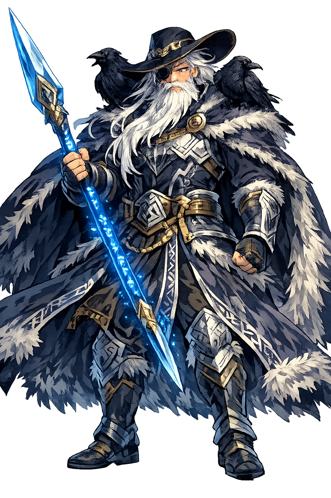

The Authentic Orthography
Wisdom · War · Death · Poetry · The Hangman's God

Why óðinn.com is the correct form
Óðinn
The name in its original Old Norse form. The ó is long and dark — a vowel held like a death-pledge. The ð (eth) is the sound of breath passing through teeth, the whisper of the hanged. The inn suffix marks the definite article, the One, the Only. Proto-Germanic *Wōđanaz — "the furious one," "the inspired one." His name is a storm. His name is a trance. His name is the moment the spear enters flesh and the mind leaves the body.
ODIN
Reduced to four letters. A Marvel character. A day of the week. A generic name for any bearded old man with authority. The eth is gone. The acute is gone. The length is gone. The fury is gone. What remains is a brand, a cliché, a void where a god once stood. The All-Father has become a logo. The hanged god has become a hashtag.
Óðinn
The acute on the ó restores the length and stress of the original vowel. The eth (ð) restores the voiced dental fricative — the sound of breath, of whispered runes, of the wind in the gallows-tree. This is not decoration. It is the recovery of terror. The domain encodes to Punycode, but the browser displays the truth.
óðinn.com → xn--inn-2mao.com
The non-ASCII characters ó (U+00F3) and ð (U+00F0) are encoded while the ASCII remains visible. To the DNS, it is Punycode. To the north, it is Óðinn.
How the All-Father was truly spoken
Domains, symbols, and the price of wisdom
Óðinn is not a king. He is a question that walks. He gave his eye for a single drink from the Well of Mímir. He hung himself on Yggdrasil for nine days and nights, pierced by his own spear, to learn the runes that raise the dead and bind the living. He sends his ravens across the world each dawn to tell him what they have seen — and what they have seen is everything. He is the father of the slain, the lord of the hanged, the god who knows that wisdom costs more than gold and pays it gladly. He does not rule. He understands. And understanding is heavier than any crown.
Not knowledge. Understanding. The kind that comes only from sacrifice. Óðinn knows because he has paid for knowing. One eye. Nine days on the tree. The mead of poetry, stolen and vomited. He does not teach. He demonstrates.
The lord of the slain. He sends the Valkyries to gather the bravest dead to Valhalla, his hall in Asgard. Half the dead go to him. Half to Freyja. He does not fight for victory. He fights for meaning. The warrior who dies in bed dies forgotten.
The Mead of Poetry — brewed from the blood of the wise Kvasir, hidden by the giant Suttungr, stolen by Óðinn in the form of an eagle, and vomited into vessels in Asgard. To drink it is to become a skald. To speak it is to speak with the god's own tongue.
The runes he won on Yggdrasil — eighteen charms that heal, bind, curse, raise, protect, and destroy. He is the master of seidr, the shamanic magic of trance and shape-shifting. He is the god who crosses boundaries — between life and death, male and female, god and mortal.
Stories of sacrifice, theft, and the cost of knowing
Óðinn traveled to Jötunheimr, to the Well of Mímir, where the giant Mímir guarded waters that granted absolute wisdom. "Drink," said Mímir, "but the price is an eye." Óðinn did not hesitate. He plucked out his own eye — the right one — and dropped it into the well. It sank through the dark water and settled on the bottom, where it still gazes upward, seeing everything that the surface world cannot. Óðinn drank. And he understood. He understood that Ragnarök would come. He understood that the gods would die. He understood that his son Baldr would be killed. And he understood that he could change none of it. This is the wisdom he bought: the knowledge of inevitability, and the courage to face it.
Óðinn hung himself from Yggdrasil, the World Tree, pierced by his own spear Gungnir. He hung for nine days and nine nights, neither eating nor drinking, neither living nor dying. The wind cut him. The cold froze him. The tree absorbed his blood. And on the ninth night, as he hung at the edge of death, the runes revealed themselves to him. Not taught. Not given. Revealed. He seized them, screaming, and fell from the tree with eighteen charms — spells to heal, to curse, to bind, to raise the dead, to blunt weapons, to calm storms. He paid for them with his body. He paid for them with his sanity. He paid for them with nine days of absolute, unendurable solitude. And he never spoke of what he saw in the dark between the branches.
The dwarves Fjalar and Galar killed the wise Kvasir and brewed his blood into a mead that granted the gift of poetry to whoever drank it. The giant Suttungr hid it in a mountain. Óðinn wanted it. He went to the mountain in the guise of a worker named Bölverkr — "Evil-Doer." He seduced Suttungr's daughter Gunnlöð, who guarded the mead. She let him drink — one sip, she said. He drank all three vessels. He transformed into an eagle and flew back to Asgard, the mead in his belly. Suttungr pursued him, also in eagle-form. The gods set out vessels. Óðinn vomited the mead into them — but some spilled. That spilled mead became the poetry of bad poets. The rest became the poetry of skalds, of seers, of those who speak with the god's own fury. He stole it. He lied for it. He betrayed for it. And he never apologized.
Baldr, Óðinn's most beautiful son, began to dream of his own death. Frigg, his mother, extracted oaths from every object in the world not to harm him — every stone, every metal, every wood, every beast. Every object except mistletoe, which she thought too young and harmless to swear. Loki discovered this. He fashioned a dart of mistletoe. He gave it to the blind Höðr. Höðr threw it. Baldr died. The gods wept. The sun dimmed. The earth shook. And Óðinn — who had known this would happen, who had seen it in the Well of Mímir, who had paid an eye for the wisdom that could not prevent it — rode to Hel to bargain for his son's return. Hel agreed: if every living thing wept for Baldr, he would return. All wept except one giantess — Loki in disguise. Baldr stayed dead. And Óðinn understood, again, that wisdom is not power. Wisdom is the knowledge of what you cannot change.
Zeus has thunder. Athēnā has wisdom. Hēlios has the sun. But Óðinn has the cost. He is the proof that wisdom is not free, that power is not given, that the gods themselves must pay for what they know. He gave his eye. He gave his body. He gave his son. And he gave his peace — for the knowledge that Ragnarök comes, that the world ends, that even gods die. He does not rule from a throne. He wanders. He watches. He waits. His ravens circle the world. His wolves pace at his feet. And when the final battle comes, he will ride first into the fray, one-eyed, spear in hand, knowing he will fall, knowing it changes nothing, riding anyway.
This is not a directory. This is a resurrection.
Enter the Lexicon